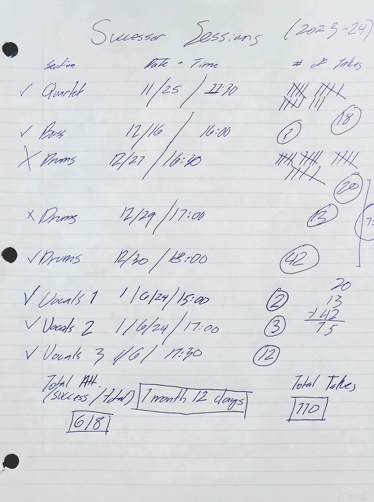

Successor
STRINGS
Session Information:
Recorded on
25 Nov, 2023
After
18 takes (8 alt take inserts from 4 takes)
Recording Information:
Sound recorded through multi-channel interface at 24bit/96kHz resolution.
Violins and Viola recorded using 2 Shure SM57 cardioid microphones.
Cello recorded using Audio Technica AT2020 condenser microphone.
BASS
Session Information:
Recorded on
16 Dec, 2023
After
[N/A] takes
Recording Information:
Sound recorded through multi-channel interface at 24bit/96kHz resolution, line out from Fender Rumble 40 amplifier.
DRUMS
Session Information:
Recorded on
30 Dec, 2023
After
75 takes (9 ([N/A]) alt mix inserts from 3 takes)
Recording Information:
Sound recorded through multi-channel interface at 24bit/192kHz resolution.
Upper drums recorded using 2 SM57 cardioid microphones (one for hihat/snare/upper toms, one for ride/lower toms)
Kick recorded using Audio Technica AT2020 condenser microphone.
VOCALS 1 (-0.9 Verse)
Session Information:
Recorded on
6 Jan, 2024
After
2 takes (1 (2nd take) alt mix insert from 1 takes)
Recording Information:
Sound recorded through multi-channel interface at 24bit/192kHz resolution.
Recorded using Audio Technica AT2020 with wind muff only, 2-3 inches from source.
VOCALS 2 (+0.5 Chorus)
Session Information:
Recorded on
6 Jan, 2024
After
2 takes
Recording Information:
Sound recorded through multi-channel interface at 24bit/192kHz resolution.
Recorded using Audio Technica AT2020 with wind muff only, 2-3 inches from source.
VOCALS 3 (+0.9 Chorus) [REMOVED]
Session Information:
Recorded on
6 Jan, 2024
After
12 takes
Recording Information:
Sound recorded through multi-channel interface at 24bit/192kHz resolution.
Recorded using Audio Technica AT2020 with wind muff only, 2-3 inches from source.
Export
Audio (7 Tracks) exported in stereo, 24-bit 96-kHz resolution (.wav). Dithering enabled. Peak level normalized to -1.1 dBF
Assets

-1.png)
-2.png)
-3.png)
-4.png)
-5.png)